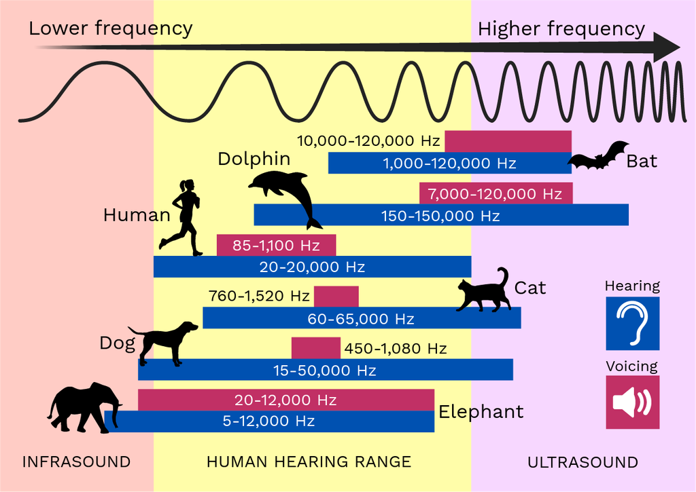
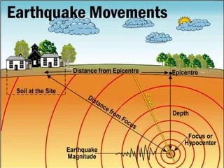
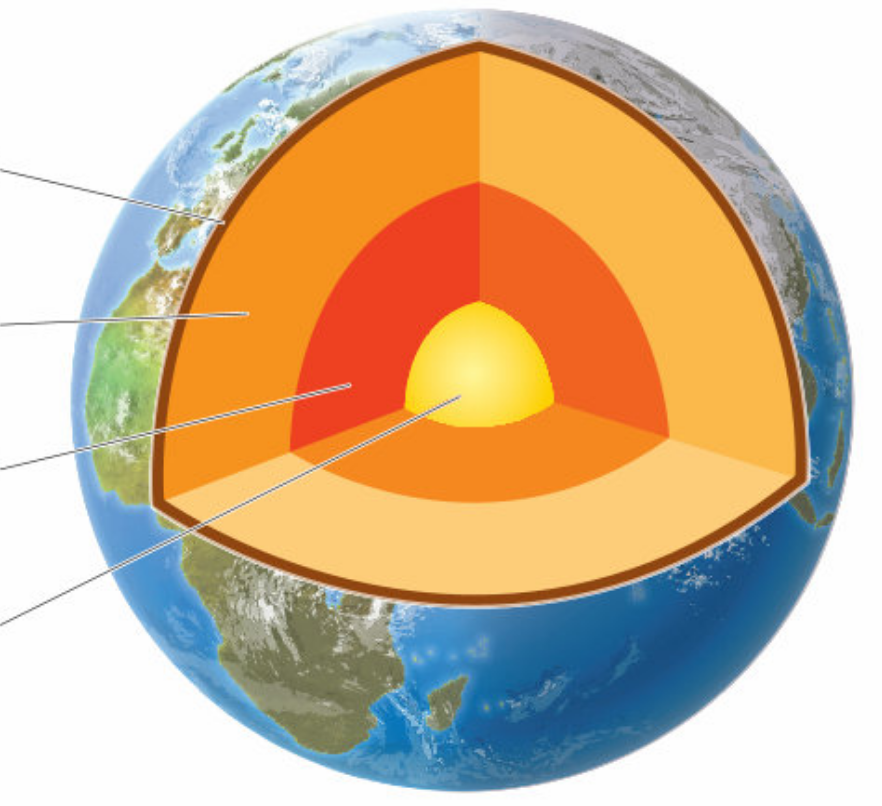
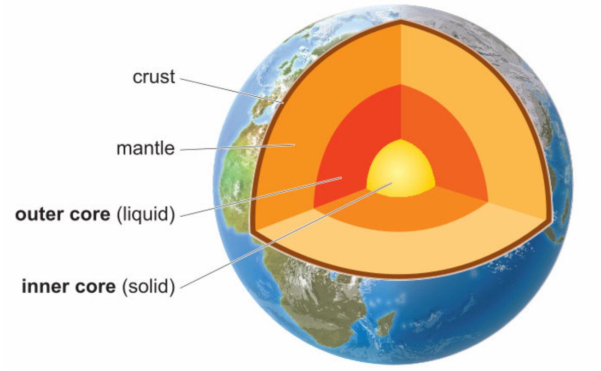
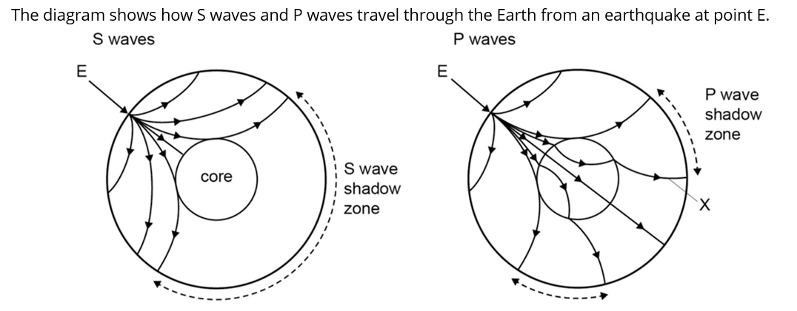
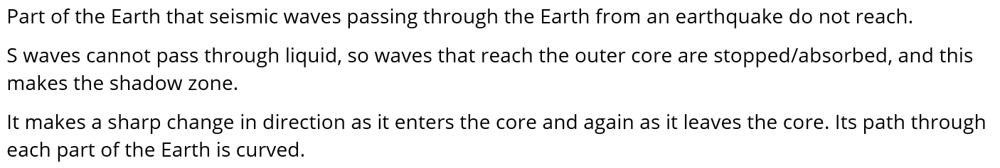
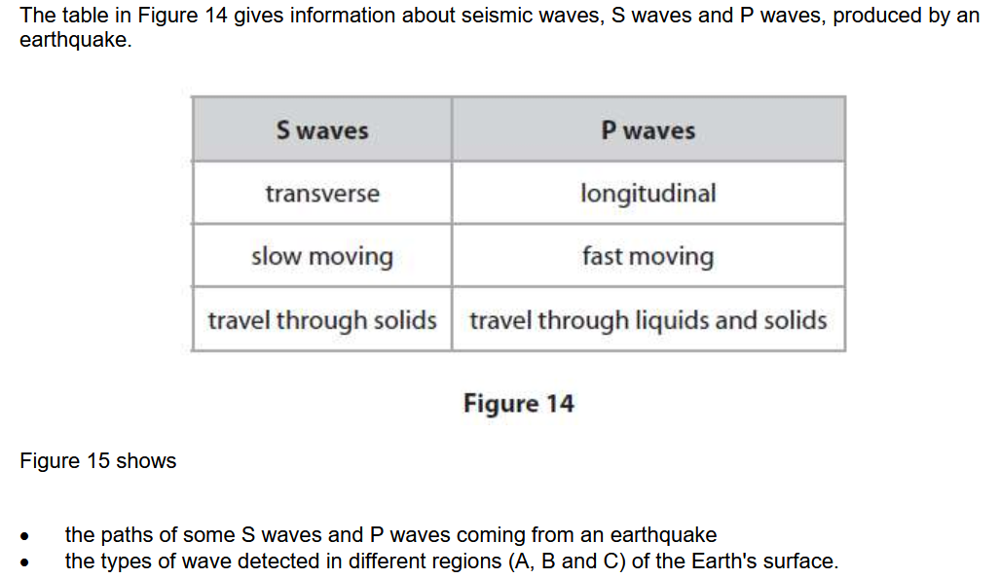
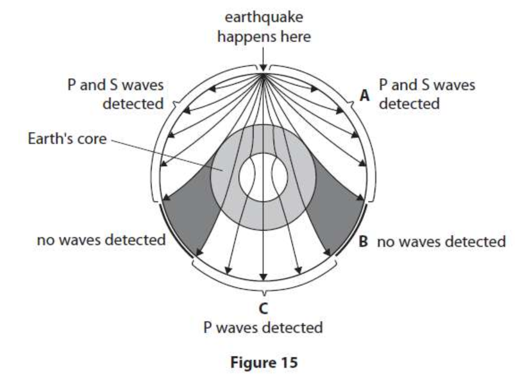

What is ultrasound?
sound too high for humans to hear
What is the lowest frequency sound that can be called ultrasound?
20000 Hz
How do bats use ultrasound?
detect insects using ultrasound echoes
What is sonar?
a way of measuring distance underwater using ultrasound


A wave that travels through the Earth.
seismic wave
An instrument that detects the wave that travels through the Earth.
seismometer
A seismic P wave is a longitudinal or transverse wave?
longitudinal
What is the name of a seismic transverse wave?
S wave


What types of matter can longitudinal P waves travel through?
solids, liquids and gases
What types of matter can transverse S waves travel through?
solids only
Is the Earth’s outer core liquid or solid?
liquid
Is an S wave an infrasound wave?
No



